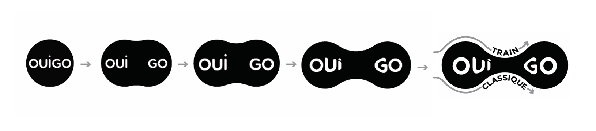
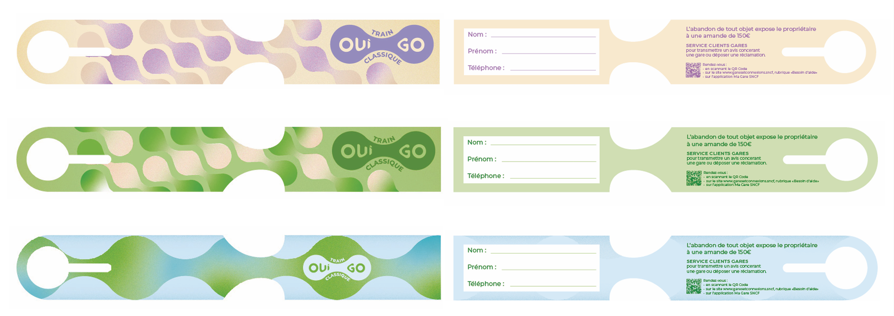
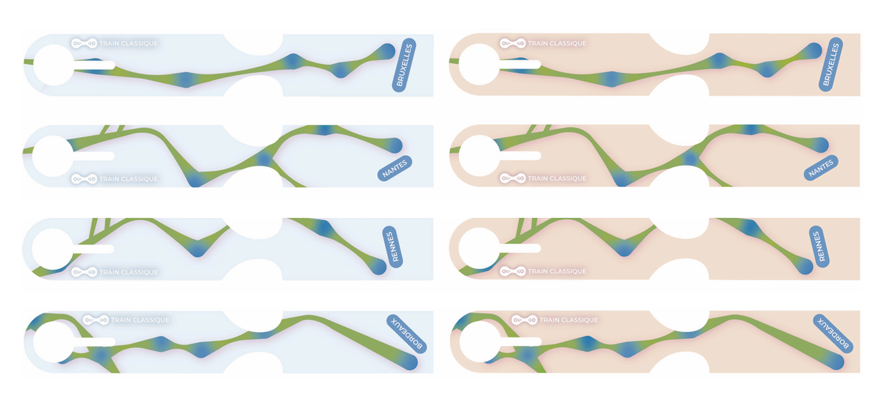
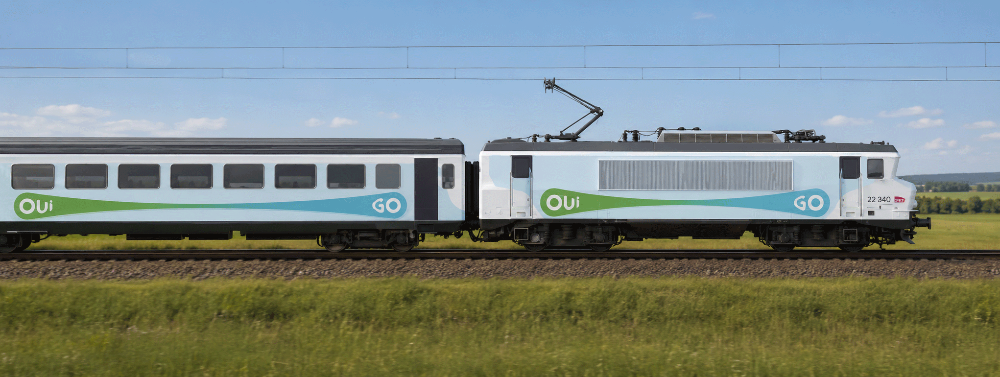
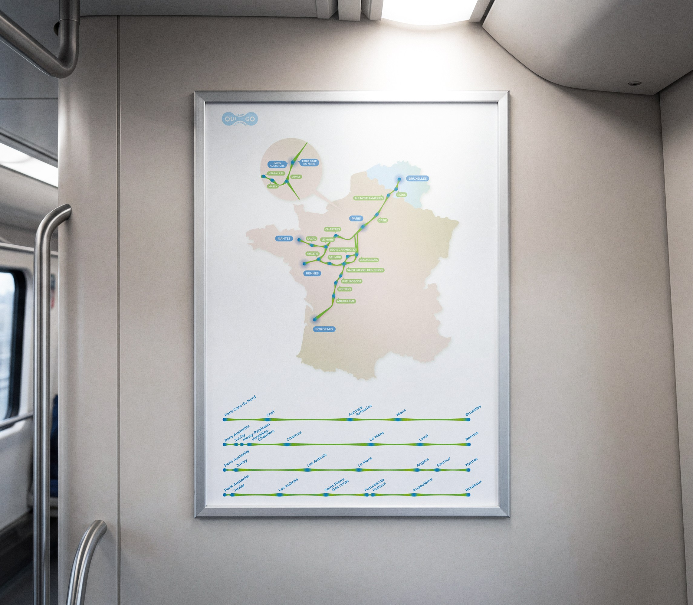
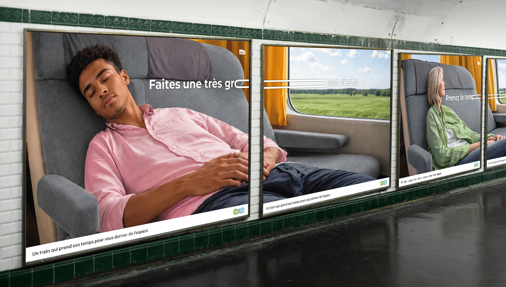
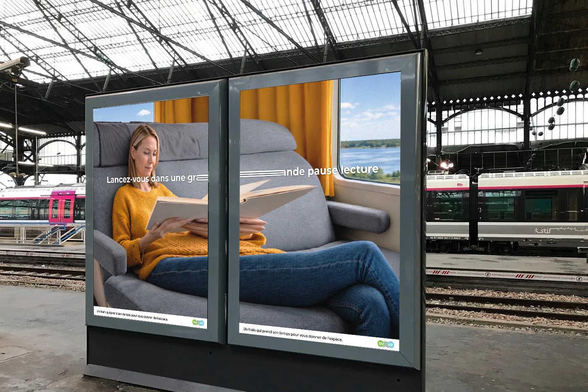
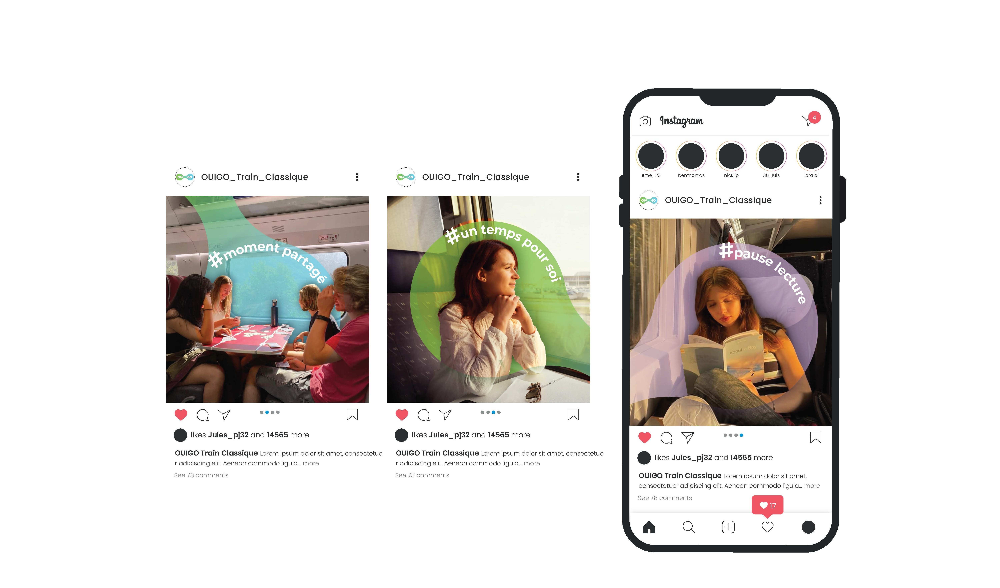
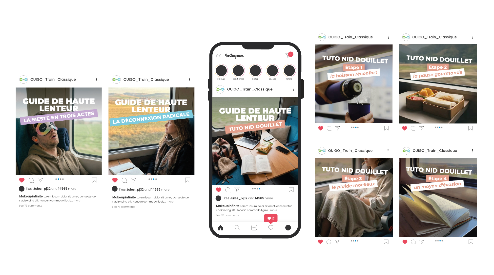

Rebranding de OUIGO Train Classique, des trains plus lents mais accessibles, afin de résoudre la confusion avec OUIGO TGV et de valoriser la lenteur comme une expérience de voyage positive et assumée.
L’identité repose sur l’idée du temps étiré, le trajet devient un espace suspendu entre deux points. Le logo OUIGO est étiré, faisant de l’étirement un marqueur graphique identitaire. Les couleurs incarne un lieux de bien‑être : des bleus et verts évoquent la nature, tandis que des teintes chaudes et violettes rappellent l’humain et l’intimité.
L’identité se décline sur les étiquettes de bagage, où la forme du logo devient motif distinctif ; sur l’habillage des wagons, le logo s’étire pour traduire d’un espace ralentie ; et sur la carte de ligne, où les lignes ce retrouves étiré et les stations apparaissent dans des phylactères symbolisant d’un espace vécu par les passagers.
la communication montre comment habiter cette espace. Les affiches mettent en scène des voyageurs de tous âges, jouant sur l’étirement visuel et typographique. Les visuels, étirés sur deux supports, deviennent des marqueurs identitaires forts.
Les réseaux explore la forme du logo comme bulle, pour montrer les différentes usage. La série Le guide de haute lenteur propose ensuite des tutoriels sensibles, valorisant le train comme un espace d’expérience, que l’on peut préparer.








